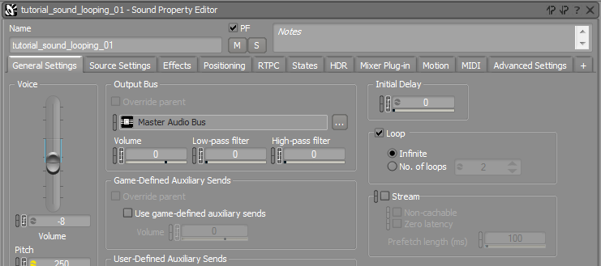
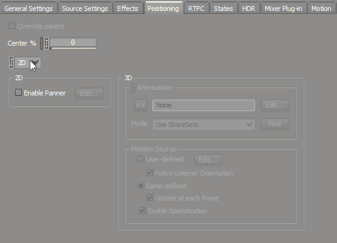
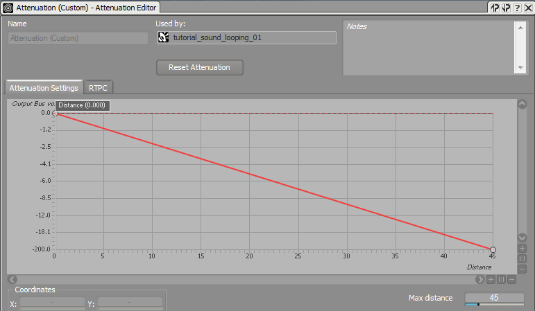
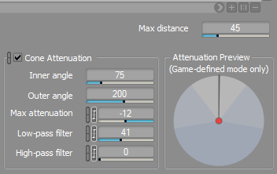
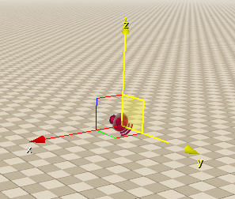

Overview
This tutorial explains how to make use of all the functionalities of Wwise events that emit sound from a spot location.
Setting up the Audio Trigger Spot Entity in CRYENGINE
Using the Audio Trigger Spot Entity
CRYENGINE uses the Audio Trigger Spot entity to playback Wwise events that emit sound from a spot location in your level. These sounds are called SpotFX. In Wwise, there are multiple options to influence how sound will be heard (on an entity) when it's played back in the CRYENGINE.
The Audio Trigger Spot can be found in the Create Object -> Audio under Level Editor in the Tools menu. After you select the Audio Trigger Spot entity, you can place it anywhere in your level.
For a detailed explanation on how to setup the Audio Trigger Spot entity in your level, please follow the instructions in
Working with Attenuations
When you create a new sound object in Wwise it will, by default, be a 2D Sound. This means the sound will always play back the same with no changes in volume or panning based on account of the listener's and/or entity's position. Therefore, if you trigger a 2D Sound on an Audio Trigger Spot, it will always sound the same regardless of the location of your character or the Audio Trigger Spot entity in your level.
To setup a 3D sound in Wwise, first create a new sound object in the Wwise's Actor-Mixer Hierarchy, make sure to create an event and include it in the SoundBanks as explained Wwise Initial Setup.

However, if you want to place the audio in the game and have it attenuate properly and according to the listener and entity's position, then you need to define the sound object in Wwise to be a 3D sound.
You can do this using the Positioning Tab of the Sound Object Property Editor. In the Positioning tab, select the 3D positioning type and create a new custom attenuation for the sound object by clicking on the >> button and then select Default (Custom) (Pic2).

In Wwise, it is useful to create ShareSets for the attenuations that you are using on multiple sound objects. To learn more about ShareSets, please refer to the Wwise documentation and the following tutorial video.
You can change the custom attenuation by clicking the Edit button in the 3D section of the Sound Property Editor. For example, you can set it to a range of 45 meters and attenuate the volume accordingly.

After you have finished setting up the attenuation for your sound, now generate your SoundBanks and connect the audio system Trigger on the Audio Trigger Spot entity in your level.
You will notice that the sound is now being attenuated according to the distance of the listener to the Audio Trigger Spot entity. In this example, you have used Volume Attenuation, however within the Attenuation Editor in Wwise, you can also control the Filtering, Spread or Reverb-Send level depending on the distance to the listener.
Working with Cone Attenuation
Cone Attenuation functionality is another useful attenuation feature in Wwise and one that can be used inside CRYENGINE. This affects how the player hears the sound depending on their positioning around the sound emitting entity.
For example, a normal speaker can sound open and loud while standing in front of it, but it can sound more muffled and quiet when you stand behind it. This effect can be created in Wwise by enabling Cone Attenuation in the Attenuation Editor.

After you enable Cone Attenuation, you need to recreate your SoundBanks and then reload them via the Refresh Audio menu option in CRYENGINE.
The Y-axis of the Audio Trigger Spot will always point towards the front of the Cone.

When you are now moving around the Audio Trigger Spot in game, you will hear the sound which gets attenuated accordingly. It will consider the distance and position of the listener with respect to the entity and it will attenuate the sound accordingly.
Other Use Cases for Wwise Attenuations
The above explained behaviors are also relevant for audios that are not triggered by the Audio Trigger Spot. The Wwise Attenuation can also be used to set up audio system Triggers that can be called for Material Effects, Particles, or Animations.
If you want to learn how to connect the audio system Triggers for those use cases, then take a look at the pages under Audio Overview.
Randomizing Sound on the Audio Trigger Spot and Wwise
The Audio Trigger Spot offers randomization features which allow the re-triggering of a sound at a certain time and radius. For example, this can be used to simulate seagulls which can be heard at different points in time and in different positions in the sky. An example of this setup can be found in the CRYENGINE Sandbox Editor showcase levels.
You can have two ways to achieve this, either by using the functionality inside Wwise or inside the Audio Trigger Spot entity. The set up for re-triggering or the randomized positioning on the Audio Trigger Spot depends on the implementation scenario.
In the examples below, you are going to create a RandomContainer in Wwise and populate it with multiple sounds.
Using the Audio Trigger Spot
- Select the RandomContainer in Wwise and make sure it is set to Step and not to Loop Enabled.
- Randomized Retriggering:
- In CRYENGINE, select the Audio Trigger Spot and enable PlayRandom in the Audio Trigger Spot properties.
- Set a value for MinDelay and MaxDelay to define the time range in which the audio system Trigger will be re-triggered.
- Randomized Panning:
- In CRYENGINE, enable the PlayOnX/PlayOnY/PlayOnZ check box to enable randomization of the sound position on a desired axis of the Audio Trigger Spot.
- Set a value for RadiusRandom to define the range in which the sound can be randomized.
Setting up this functionality in CRYENGINE is more performance effective, when you use Obstruction/Occlusion on the Audio. The randomized positioning also considers the Obstruction/Occlusion of other materials placed between the spawn point of the sound and the listener's position.
Note: In comparison to Wwise, you do have less randomization options over the entity.
Using Wwise Functionality
- Select the RandomContainer in Wwise and ensure its set to Continuous.
- Randomized Retriggering:
- Select the RandomContainer in Wwise and enable the Loop checkbox in the Property Editor.
- Enable the Transitions checkbox and select Retrigger as the Transition Type.
- Enter a time value for the Transition. This value can also be randomized upon each trigger in Wwise.
- Randomized Panning:
Select User-defined as the Position Source in the Positioning Tab of the Property Editor.
Select the Edit button for the User-defined Position Source, now you can setup a Random Range for the X, Y and Z axis in which the sound will be randomized.
Setting up this functionality in Wwise provides more options in terms of Randomization (Standard, Shuffle and Avoid Repeating Last) as well as Transitions. You can also draw user defined positioning paths that let the sound to travel along predefined paths in Wwise.
On the downside, the user defined positioning will not take into account Obstruction/Occlusion values from where the sound is spawning. Using this setup the Obstruction/Occlusion will be calculated as long as the Play_ Event is active, and also if no audio is currently playing inside of Wwise.
You can learn more about Obstruction and Occlusion in CRYENGINE here.